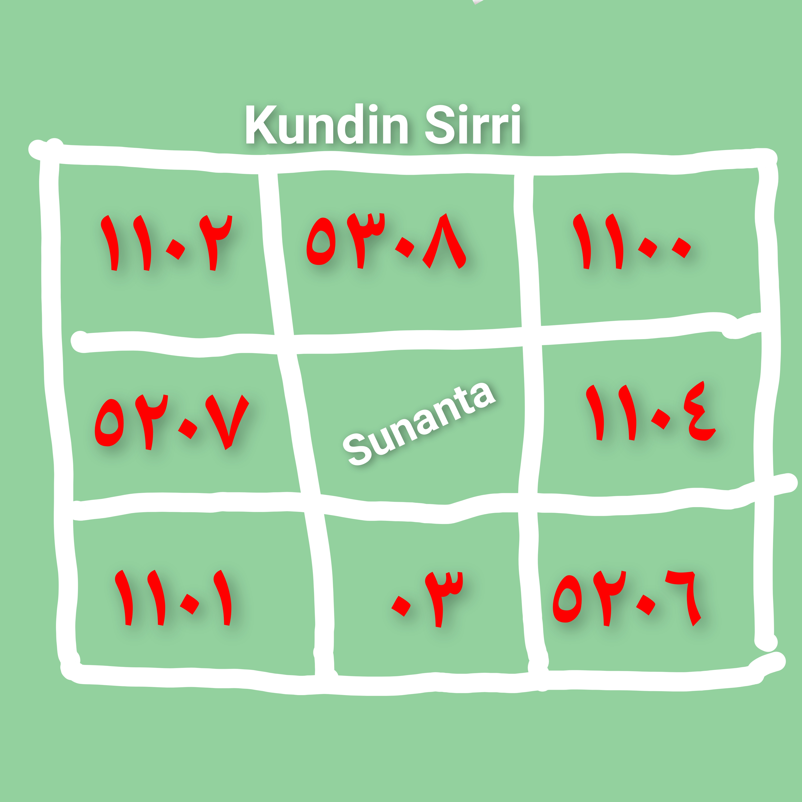

Wannan sirrin ya futo daga hannun maulan mu Mallam Sani Adam Warure Kano Ana rubuta Li'ilafi har karshe kafa 1 sai wannan hatimin kafa 1 a saka sunan mace a tsakiya, bayan an gama sai a wanke a kwano mai kyau bayan an wanke sai a saka gishiri kadan sannan sai mijin ya wanke azzakarin shi da rubutun ya sadu da matar tashi, wallahi zakaga inda zaka mallaketa, in ka fada mata abu ko mahaifiyarta ce ta hanata bazata hanuba.
By Muawiya Muzzy | 25 Feb 2025
All Right Reserved